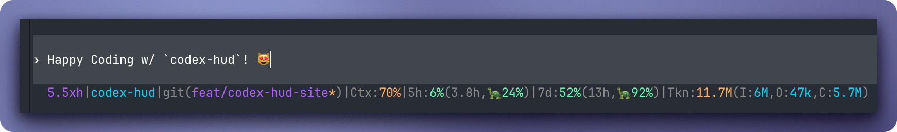

1. Add the plugin
codex plugin add brandonwie@codex-hud
OpenAI Codex CLI status line
A compact footer for terminal Codex sessions: model, effort, git state, context budget, rolling usage, and pace without leaving the prompt.
codex plugin add brandonwie@codex-hud

Config playground
Install path
codex plugin add brandonwie@codex-hud
codex-hud --line --color
codex-hud --init-config
Search-ready by default
Targets the practical phrase set around OpenAI Codex CLI, status line, context usage, and terminal HUD workflows.
Ships SoftwareApplication, WebSite, and FAQPage schema with canonical metadata for the live GitHub Pages URL.
No framework payload, no remote fonts, no client dependency chain, and only one small local script for the live preview.
FAQ
No. The project stages its patched launcher under user-local paths and keeps stock Codex install paths untouched.
Codex HUD reads optional codex-hud.toml files from user, project, and explicit config paths, then falls back to defaults.
Model, reasoning effort, project, branch, context usage, rolling usage windows, token totals, and pace formatting.